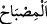
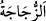

yapılmıştır. Lambanın kristal bir fanus içinde, bu fanusun da duvarda açılan penceresiz
bir oyukta olduğunu belirtmek, oradaki aydınlanmanın şiddetini göstermek içindir.
Çünkü mekân darlaştıkça ışık ve aydınlanma çoğalır. Geniş mekânlarda ise bunun aksi
söz konusudur. İçinde bulunanı en iyi şekilde yansıtan bir madde olduğundan kandilin
yapım maddesi olarak cam seçilmiştir.
“O fanus da sanki inciye benzer bir yıldız gibidir”
Bu cam fanus, parlaklığı ve saflığı inciye benzeyen Müşteri, Zühre ve Merih yıldızları
gibidir. Yıldızlardan inci gibi olanlar, meşhur büyük yıldızlardır. Âyette “__WORD__ (lamba)” ve “__WORD__ (kristal fanus)” kelimelerinin nekre olarak zikredildikten sonra
tekrar ma‘rife olarak zikredilmelerinde ve haklarında bir kısım açıklayıcı bilgiler
verilmesinde bu ikisine ehemmiyet verildiğine işâret vardır.
“Ki, doğuya da batıya da nisbet edilemeyen mübârek” yâni faydası bol “bir
ağaçtan, yâni zeytinden” çıkan yağdan “tutuşturulur.” O zeytin ağacıdır ki yetmiş
peygamber, bereketi için duâ etmiştir. Bu peygamberlerden birisi de İbrahim
Halîlullah’tır.
Hakikaten zeytin ağacı faydası bol olan bir ağaçtır. Çünkü zeytin katık olarak
kullanılır, yağından yemede, lamba tutuşturmada ve deri tabaklamada istifâde edilir.
Odunu ateşte yakılır, külü ile ipekli çamaşırlar yıkanır. Yağını çıkarmak için sıkıcı bir
âlete ihtiyaç yoktur. Aydınlatması fazla, dumanı azdır. Ayrıca zeytin yağı bâsûr
hastalığına da şifâdır. Yağı daha parlak ve saf olduğu için ağaçlar arasında sadece
zeytin ağacı zikredilmiştir.
Zeytin ağacı, ne doğuya ne de batıya âid bir ağaçtır. Doğuya âid olsa güneş onun
üzerine sadece sabahları doğar, batıya âid olsa sadece akşamları batarken düşer.
Bilakis o öyle bir yerde bulunur ki -tepe üstü ve sahra gibi- gün boyu güneş alır. Onu
hiçbir şey güneşten gölgeleyemez. Böylece meyvesi daha olgun, yağı daha saf ve parlak
olur. Ya da zeytin ne sürekli güneş alıp harâretinin kavurduğu güneşlik bir yerde, ne de
güneşten uzak meyvesini olgunlaştıramayacak gölgelik bir yerdedir. Yahut da o, ne Çin
diyârı ve Hıta[169] gibi şark memleketlerinde; ne de Tanca ve Kayrevan diyârı gibi batı
memleketlerinde yetişir. Bilakis Şam gibi dünyanın orta kısımlarında veya doğu ile
bâtının birleştiği ve yeryüzünün kubbesi diye bilinen, doğu ve batı diye
isimlendirilemeyen (Akdeniz iklimi bölgesinde) yerlerde yetişir. Çünkü buralarda
zeytin ağacına zarar verecek sıcak ve soğuk söz konusu değildir. En güzel zeytin Şam
taraflarında olur.
Yeryüzünün kubbesi, ma’mur ve harab kısımlarının ortasıdır. Burada bütün
zamanlarda sıcaklık ve soğukluk mutedil, gece ile gündüz sürekli olarak eşittir, biri
birinden fazla olmaz. Yâni her ikisi de on ikişer saattir.
Hasan Basrî (rh.a.) der ki: “Bu ağacın aslı cennetten dünyaya getirilmiştir. Öyle ise
doğusu ve batısı şeklinde nitelendirilecek bu âlemdeki ağaçlardan değildir.”
“Onun yağı, neredeyse, kendisine ateş değmese dahi ışık verir.” Ona bir ateş